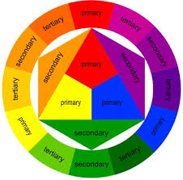

the color wheel 
is a visual representationof colors arranged in a circle.
it shows how color relate to each other,how they mix ,blend and contrat.
primary color are the base color can not be created by mixing other colors.
red is a warm and strong color .
it is often associated with:
blue is a cool and calming color.
it is often associated with:
yellow is a bright and cheerful color.
it is often associated with:
secondary colors are created by mixing two primary colos: